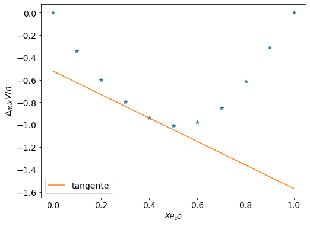

Gandezas parciais molares#
Fundamentos Teóricos#
Uma solução é uma mistura homogênia de dois ou mais componentes. As propriedades termodinâmicas de soluções dependem da composição e da contribuição individual de cada componente as propriedaes da solução. A contribuição de cada componente pode ser descrita em termos de grandezas parciais molares. Por exemplo, o volume de uma solução pode ser escrita como \(V = \sum_{i} n_i V_{m,i}\). Onde \(n_i\) é o numero de mols do componente i e \(V_{m,i}\) é o volume molar parcial de i.
Podemos escrever qualquer propriedade termodinâmica de uma solução, como U, H, S e G, em termos de somatórios similares ao do volume:
Onde Y se refere a prorpiedade termodinâmica da solução e \(Y_{m,i}\) é a propriedade molar parcial de cada componente. Logo, determinar a propriedades molares parciais é importante para o cálculo de propriedaes de mistura, como variação do volume ou liberação/abseorção de calor ao se misturar duas substâncias puras.
O exemplo resolvido mostrará como o é possível calcular o volume molar parcial dos componentes de uma mistura binária pelo método da interseção. Para a resolução dos exercíos faremos uso das bibliotecas Numpy e Matplolib.
import numpy as np
import matplotlib.pyplot as plt
---------------------------------------------------------------------------
ModuleNotFoundError Traceback (most recent call last)
Cell In[1], line 1
----> 1 import numpy as np
2 import matplotlib.pyplot as plt
ModuleNotFoundError: No module named 'numpy'
A densidade do \(H_2 O\) e \(CH_3 OH\) a 25ºC e 1 atm são 0,99705 e 0,78706 \(g ~cm^{-3}\), respectivamente. Para soluções binárias destes compostos, os seguintes valores de \(\Delta V_{mix}/n\) vs \(x_{H_2 O}\) foram medidos:
V |
-0,34 |
-0,60 |
-0,80 |
-0,94 |
-1,01 |
-0,98 |
-0,85 |
-0,61 |
-0,31 |
x |
0,1 |
0,2 |
0,3 |
0,4 |
0,5 |
0,6 |
0,7 |
0,8 |
0,9 |
Use o método da interseção para encontrar o volume molar parcial para a composição \(x_{H_2 O} = 0,4 \)
Solução#
Inicialmente os valores podem ser completados para valores de \(x_{H_2 O} = 0 \) e \(x_{H_2 O} = 1 \). Nos extremos os valores de \(\Delta V_{mix}/n = 0\). Posteriormente é preciso armazenar os valores de \(x_{H_2 O} = 0,4 \) e \(\Delta V_{mix}/n\) correspondente a esta fração molar.
A reta tangente a composição desejada é utilizada usando a equação \(y - y_1 = m(x - x_1)\). Onde m é o coeficiente angular da reta, obtido pela derivada primeira na composição desejada, \(y_1\) é \(\Delta V_{mix}/n \) quando \(x_{H_2 O} = 0,4 \). A partir da equação da reta determinamos \(\Delta V_{mix}/n \) quando \(x_{H_2 O} = 0 \) e \(x_{H_2 O} = 1 \).
Quando \(x_{H_2 O} = 0 \) temos que \(\Delta V_{mix}/n = V_{m,metOH} - V^* _{m,metOH}\) e quando \(x_{H_2 O} = 1\) temos que \(\Delta V_{mix}/n = V_{m,H_2 O} - V^* _{m,H_2 O} \)
x = np.array([0,0.1,0.2,0.3,0.4,0.5,0.6,0.7,0.8,0.9,1])
V = np.array([0,-0.34,-0.6,-0.8,-0.94,-1.01,-0.98,-0.85,-0.61,-0.31,0])
x1 = 0.4
#Encontrando o índice referente ao valor 0,4
Vi = np.where(x == x1)
#Encontrando o valor de volume que corresponde a x = 0,4
y1 = V[Vi]
# Fazendo a derivada numérica e guardando o valor referente a x = 0,4 na variável m
derivada = np.gradient(V,x)
m = derivada[Vi]
#Definindo a equação da reta
def y(x):
b = -m*x1 + y1
return m*x + b
print('Extrapolação quando x = 1: ', y(1), 'cm³/mol')
print('Extrapolação quando x = 0: ', y(0), 'cm³/mol')
Extrapolação quando x = 1: [-1.57] cm³/mol
Extrapolação quando x = 0: [-0.52] cm³/mol
Vamos construir o gráfico contendo os dados do problema e a reta tangente para verificar se os resultados calculados estão coerentes.
#Instruções para cntrole do tamanho do gráfico
plt.rcParams.update({'font.size': 14}) # estes dois parâmetros precisam aparecer antes da definição do plot
plt.figure(figsize=(8,6))
plt.plot(x, V,'*') #Dados experimentais do problema
plt.plot(x,y(x),label='tangente')#Derivada numérica calculada
plt.legend(loc='best')
plt.xlabel('$x_{H_2 O}$')
plt.ylabel('$\Delta_{mix}V/n$')
plt.show()

Note que a reta tangente obtida passa pelo ponto \(x_{H_2 O} = 0,4 \). De posse dos valores calculados, o próximo passo é converter os valores de densidade dos líquidos puros em \(V^* _{m,i} \).
Mm_a = 18 # g/mol
Mm_m = 32 # g/mol
d_a = 0.99705 # g/cm³
d_m = 0.78706 # g/cm³
#conversão da densidade em volume molar
Va_puro = Mm_a/d_a # cm³/mol
Vm_puro = Mm_m/d_m # cm³/mol
# cálculo do volume molar parcial de cada líquido
Va = y(1) + Va_puro
Vm = y(0) + Vm_puro
print('Volume parcial da água=',Va, 'cm³/mol')
print('Volume parcial do metanol=',Vm, 'cm³/mol')
Volume parcial da água= [16.48325711] cm³/mol
Volume parcial do metanol= [40.13763728] cm³/mol
Uma forma alternativa de resolver este problema é ajustando uma função aos dados fornecidos pelo problema e calculando a derivada analítica da função ajustada. A reta tangente a composição desejada, \(x_1\), será obtida usando a mesma expressão anterior, mas considerando \(y_1 = f(x)\). O leitor é encorajado a tentar resolver o exercício anterior desta maneira para avaliar os prós e contras das duas formas de resolução.